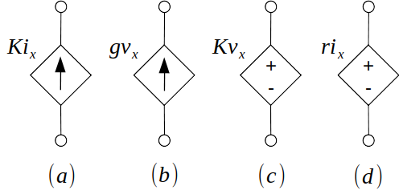
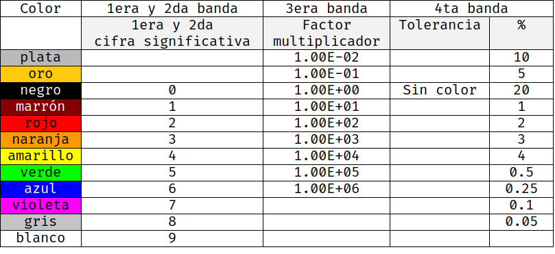
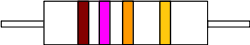
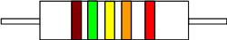
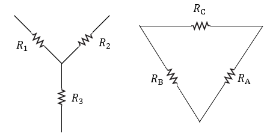
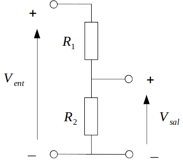

Circuitos Eléctricos
Apuntes
Índice
- 1. Definiciones
- 2. Carga electrica (coulombs)
- 3. Tensión ó voltage
- 4. Potencia (watts)
- 5. Corriente (Amperes)
- 6. polarisacion de resistencia
- 7. Resistencia, Tensión y Corriente en Paralelo
- 8. Resistencia, Tensión y Corriente en Serie
- 9. Relacion entre carga, tensión, corriente y potencia
- 10. Corriente directa
- 11. Corriente alterna
- 12. Elementos de un circuito
- 13. Fuentes dependientes
- 14. Código colores para resistencias
- 15. Convertir estrella a delta
- 16. Convertir delta a estrella
- 17. Ley de corrientes de Kirchhoff (LCK)
- 18. Ley de tensiones ó ley de voltajes de Kirchhoff (LVK)
- 19. Divisor De Corriente
- 20. divisor de voltage
1 Definiciones
1.1 Circuitos
Son un modelo para el estudio de sistemas de energía en general. Un Circuito eléctrico simple, consta de tres elementos básicos: una batería, una lámpara y alambres de conexión.
1.2 Circuito eléctrico
Es un modelo matemático que simula el comportamiento de un sistema eléctrico real. También se define como la interconexión de dispositivos eléctricos.
2 Carga electrica (coulombs)
Es el principio fundamental para explicar todos los fenómenos eléctricos. Asimismo, la cantidad básica en un circuito es la carga eléctrica. De la física básica sabemos que hay dos tipos de carga: positiva (protón1) y negativa (electrón2).
La unidad de medida de la carga es Coulomb3 (C), que se define en términos del ampere al contar la carga total que pasa por una sección transversal arbitraria de un alambre durante un segundo.
3 Tensión ó voltage
Para mover el electrón en un conductor en una dirección particular es necesario realizar algo de trabajo o transferir energía. Este trabajo lo lleva a cabo una fuerza electromotriz externa (fem) también conocida como tensión, diferencia de potencial o voltage4.
4 Potencia (watts)
es la variación respecto del tiempo de gasto o absorción de energía, medida en watts (W). Si un Joule de energía se gasta en transferir un Coulomb de carga a través del dispositivo en un segundo, la tasa de transferencia de energía es un watt.
La potencia absorbida o suministrada por un elemento es el producto de la tensión entre los extremos del elemento y la corriente a través de él. Si la potencia tiene signo +, se está suministrando o la está absorbiendo el elemento. Si, por el contrarió, tiene signo -, está suministrada por el elemento.
\[ p = vi \]
La ley de conservación de la energía debe cumplirse en cualquier circuito. Por esta razón, la suma algebraica de la potencia en un circuito, en cualquier instante, debe ser cero.
\[ \sum p = 0 \]
5 Corriente (Amperes)
flujo de partículas cargadas, como electrones o iones, que se mueven a través de un conductor eléctrico o un espacio. Se mide como la tasa neta de flujo de carga eléctrica a través de una superficie o en un volumen de control5
6 polarisacion de resistencia
cuando estamos calculando valores la potencia en un circuito tenemos que identificar la polaridad de la resistencias, tenemos dos casos:
- Corriente entra por polaridad negativa
- La potencia tiene el signo negativo, entonces suministra energía.
- Corriente entra por polaridad positiva
- La potencia tiene el signo positivo, entonces absorbe energía.
7 Resistencia, Tensión y Corriente en Paralelo
- Tensión o Voltaje
- Es igual para todos los elementos en paralelo.
- Corriente
- En un circuito paralelo la corriente se reparte entre los elementos. los componentes con mas resistencia resiven menos coriente y los elementos con menos resistencia mas corriente \(\frac{A}{\Omega} = V\).
- Resistencia
- Para encontrar la resistencia total de un circuito en paralelos solamente tenemos que usar la siguiente formula:
\[ R_T = \frac{1}{\sum_{0}^{n} \frac{1}{R_n} } \Omega \]
8 Resistencia, Tensión y Corriente en Serie
- Corriente
- Es igual para todos los elementos en serie.
- Tensión o voltaje
- el voltaje es diferente para cada uno de los elementos \(V = \frac{A}{R}\).
- Resistencia
- La resistencia tota de un circuito en serie es simplemente la suma de las resistencias
\[ R_T = \sum_0^{n} R_n \Omega \]
9 Relacion entre carga, tensión, corriente y potencia
Usualmente a este mnemotécnico se le conoce como ley de ohm, pero es siemplemente formula de resistencia. La ley de

10 Corriente directa
Si la corriente no cambia con el tiempo, sino que permanece constante, se conoce como corriente directa (cd). Por convención, el símbolo I se usa para representar la corriente constante.
11 Corriente alterna
Una corriente que varia con el tiempo se representa con el símbolo i. Una forma común de corriente que varía con el tiempo es la corriente senoidal o corriente alterna (ca).
12 Elementos de un circuito
Un circuito eléctrico es simplemente una interconexión de los elementos. El análisis de circuitos es el proceso de determinar las tensiones (o las corrientes) a través de los elementos del circuito. Hay dos tipos de elementos en los circuitos eléctricos:
- Pasivos
- Es incapaz de generar energía, ejemplos de estos son resistores, capacitores y los inductores.
- Activos
- Es capaz de generar energía, ejemplos de estos son generadores, baterias y amplificadores operacionales.
13 Fuentes dependientes
La fuente dependiente o controlada, donde la cantidad de la fuente esta determinada por una tensión o por una corriente existente en algún otro lugar del sistema que se analiza.

- a) fuente de corriente (amp) determinada por corriente (amp)
- b) fuente de corriente (amp) determinada por tensión (volts)
- c) fuente de tensión (volts) determinada por tensión (volts)
- d) fuente de tensión (volts) determinada por corriente (amps)
Las fuentes de voltajes tiene polaridad +/- mientras que las de corrientes son flechas.
14 Código colores para resistencias
La tolerancia de una resistencia es un dato que nos dice que tanto (en porcentaje) puede variar el valor de la resistencia (hacia arriba o hacia abajo) de su valor indicado.

Ejemplos de lectura de resistencias:

De izquierda a derecha:
Marrón es 1 y violeta es 7 entonces el valor es 17.
La tercera banda es naranja, entonces el multiplicador es 1000.
La última banda es dorada lo que indica que su tolerancia es de ±5%.
Ya con estos datos deducimos que el valor de la resistencia es de 17kΩ ±5%
Algunas resistencias pueden tener una línea extra, para leer estas resistencias simplemente añadimos un dígito mas al valor:

De izquierda a derecha:
- marrón es 1, verde es 5 y amarillo 4, entonces el valor es 154.
- la cuarta linea es naranja, entonces multiplicamos por 1000.
- y la última banda es roja por lo tanto tiene una tolerancia de 2%.
Entonces esta resistencia es de 154kΩ con tolerancia de ±2%.
15 Convertir estrella a delta

\[ \begin{aligned} R_A &= \frac{R_1R_2 + R_2R_3 + R_3R_1}{R_1} \\ R_B &= \frac{R_1R_2 + R_2R_3 + R_3R_1}{R_2} \\ R_C &= \frac{R_1R_2 + R_2R_3 + R_3R_1}{R_3} \\ \end{aligned} \]
16 Convertir delta a estrella
\[ \begin{aligned} R_1 &= \frac{R_CR_B}{R_a+R_b+R_c} & R_2 &= \frac{R_CR_A}{R_a+R_b+R_c} \\ \end{aligned} \]
\[ R_3 = \frac{R_AR_B}{R_a+R_b+R_c} \]
17 Ley de corrientes de Kirchhoff (LCK)
Esta ley también es llamada ley de nodos o primera ley de Kirchhoff. La ley de corrientes de Kirchhoff nos dice que:
En cualquier nodo, la suma de la corriente que entra en ese nodo es igual a la suma de la corriente que sale. De igual forma, La suma algebraica de todas las corrientes que pasan por el nodo es igual a cero.
18 Ley de tensiones ó ley de voltajes de Kirchhoff (LVK)
Esta ley es llamada también Segunda ley de Kirchhoff, ley de lazos de Kirchhoff
En toda malla la suma de todas las caídas de tensión es igual a la tensión total suministrada. De forma equivalente, En toda malla la suma algebraica de las diferencias de potencial eléctrico es igual a cero.
19 Divisor De Corriente
Un divisor de corriente es un circuito eléctrico que transforma una corriente de entrada en otras 2 corrientes diferentes más pequeñas.
A una de las corrientes o intensidades se le suele llamar de salida.
para dos resistores: 